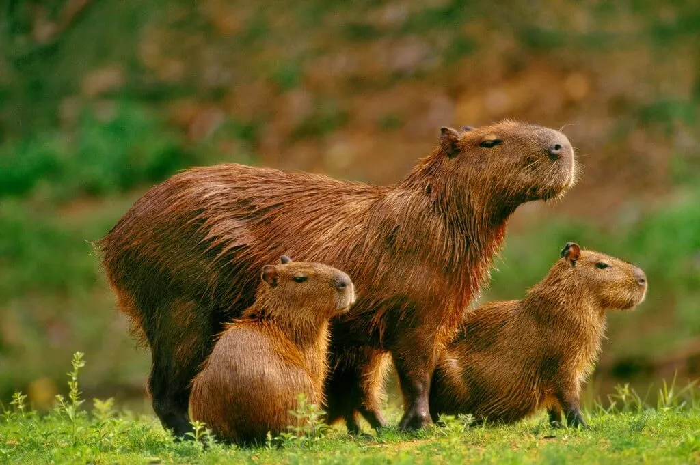
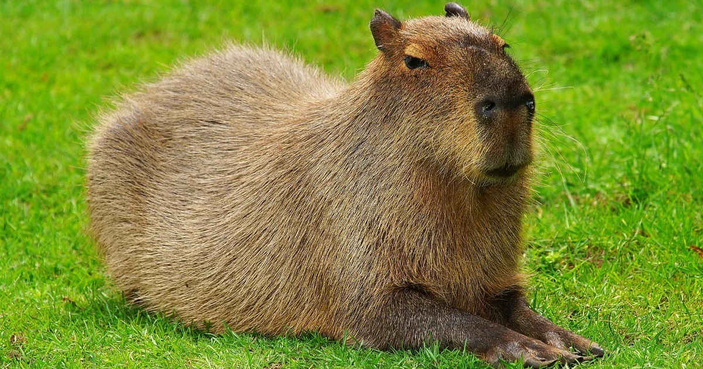
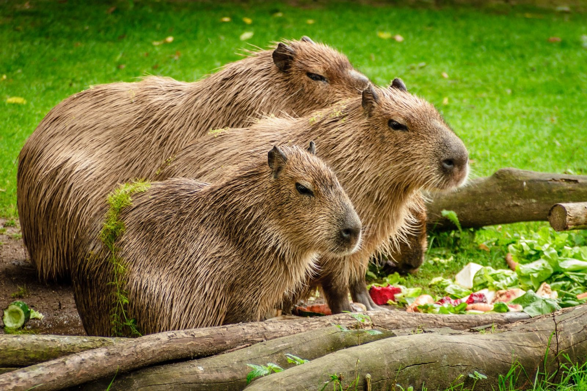
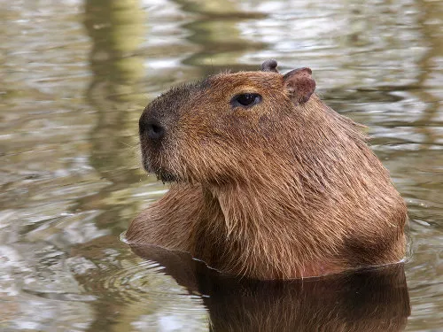
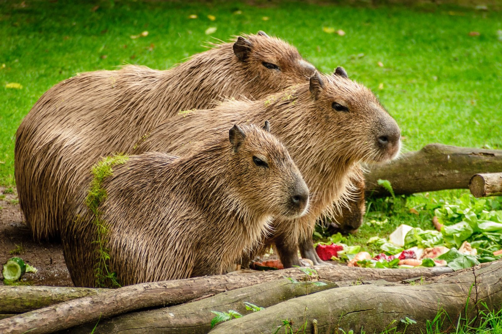
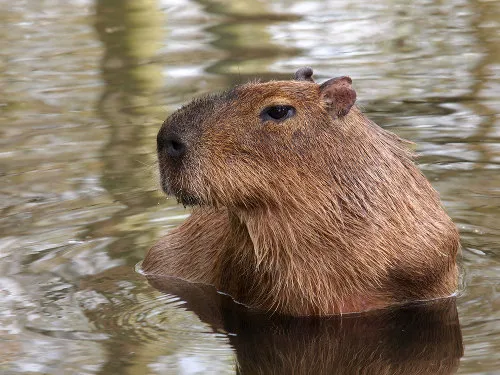
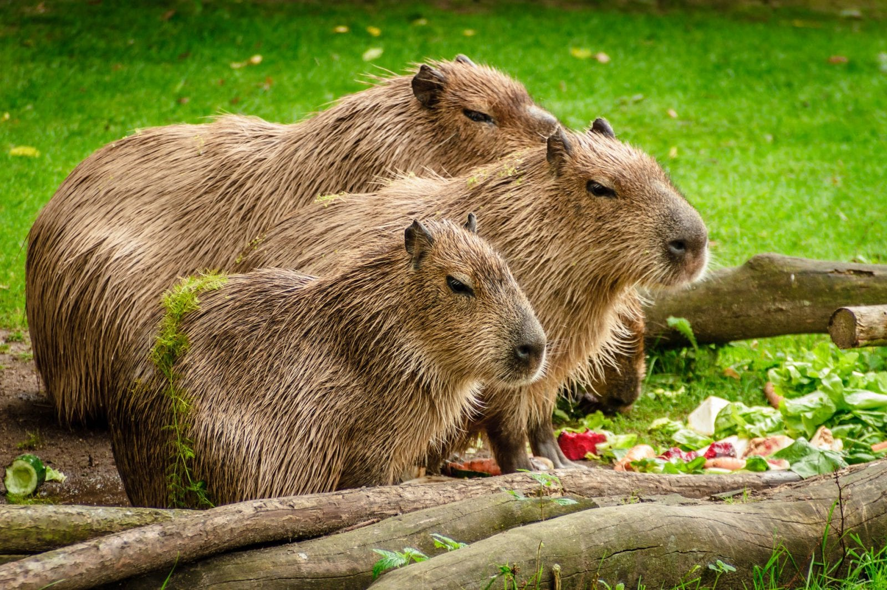
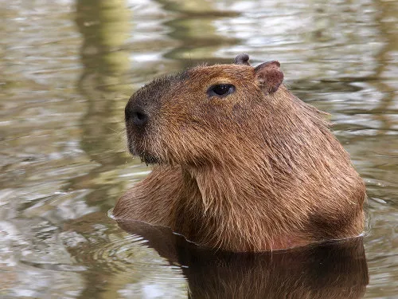
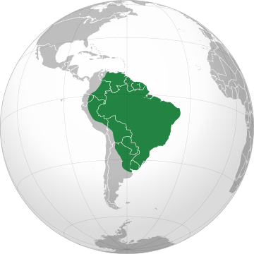

Capivara


 






INFORMAÇÕES SOBRE O ANIMAL
- Nome Científico: Hydrochoerus hydrochaeris
(Linnaeus, 1766) - Nomes Populares: Conhecida também como “carpincho” e “water pig”
Classificação Biológica
- Dominio: Eukaryota
- Reino: Animalia
- Filo: Chordata
- Classe Mammalia
- Ordem: Rodentia
- Família: Caviidae
- Espécie: H. hydrochaeris
Nutrição Geral e Hábitos Alimentares
- Tipo de Nutrição: Heterotrófico
- A capivara é um animal herbívoro que se alimenta principalmente de gramíneas, vegetação aquática, folhas de arbustos e outras plantas terrestres. Além disso, ocasionalmente, pode comer frutas e sementes. Sua dieta também pode incluir caules, folhas e frutos das plantas disponíveis ao seu redor.
Morfologia
- Pelagem e Corpo
A pelagem é densa, variando de avermelhada a marrom escuro.
O corpo é arredondado, com pescoço curto e volumoso.
Os membros são curtos, e o pescoço não pode girar independentemente; a capivara precisa girar todo o corpo para olhar para trás.
Órgãos Respiratórios
O aparelho respiratório da capivara inclui narinas, fossas nasais, cavidade nasal, seios paranasais, faringe, laringe, traqueia e pulmões. A laringe está delimitada por cartilagens e se comunica com a traqueia. Os pulmões estão localizados na cavidade torácica e apresentam-se em pares (direito com quatro lobos e esquerdo com dois lobos). As árvores brônquicas incluem brônquios intrapulmonares, bronquíolos e bronquíolos respiratórios.
Patas
As patas anteriores possuem quatro dedos, enquanto as posteriores têm apenas três. Comportamento
- Capivaras são animais que vivem em grupos com forte organização social. Elas são calmas e mansas, mas também territorialistas. Elas têm hábitos diurnos ou crepusculares, mas podem se tornar noturnas se sentirem ameaçadas. Elas se alimentam principalmente ao entardecer e se locomovem pouco durante o dia. Elas são sociáveis com outras espécies, como aves e jacarés. Elas também têm instinto de migração para buscar melhores condições de vida.
Ocorrência
- A capivara é um animal semiaquático encontrado na América Central e América do Sul, ocorrendo do sul do Panamá ao nordeste da Argentina, não sendo observada na região da cordilheira dos Andes.
- Mapa de Ocorrência 
Reprodução
- Sistema de Acasalamento: As capivaras apresentam um sistema de acasalamento do tipo poligínico e promíscuo. Isso significa que os machos podem se acasalar com diferentes fêmeas do grupo.
Reprodução ao Longo do Ano: A capivara é um animal que se reproduz durante todo o ano.
Gestação: A gestação dura entre 145 a 160 dias.
Ninhadas: As fêmeas dão à luz de um a oito filhotes. Os nascimentos geralmente ocorrem em terra, embora as fêmeas às vezes optem por dar à luz na água. Os filhotes nascem com os olhos abertos e são capazes de nadar e comer vegetação pouco tempo após o nascimento.